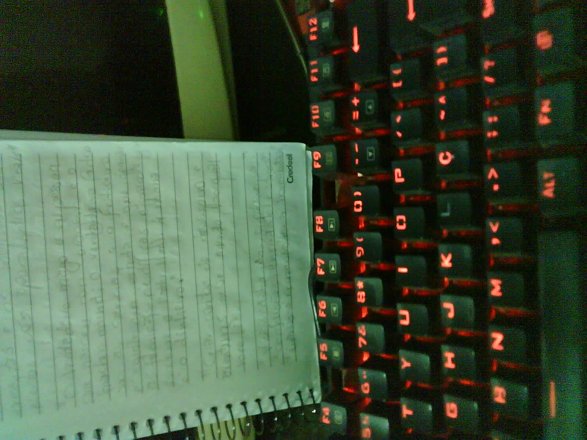

Objetivo de Monitorar o gasto de energia sem a necessidade de instalar recursos paralelos à medição. Neste caso, o aparelho monitora a medição mostrada pelo relogio analogico.
Segue um foto fresquinha para mostrar que a camera esta em pleno funcionamento
 Capturar nova foto